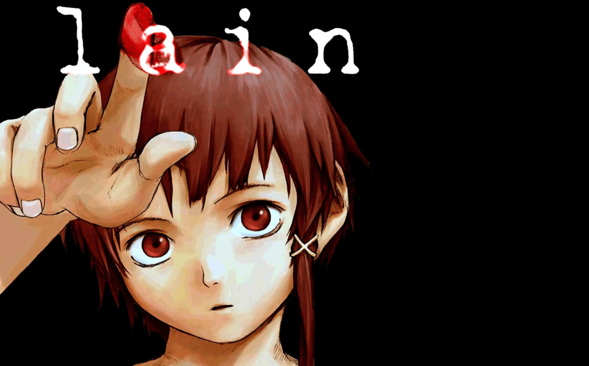
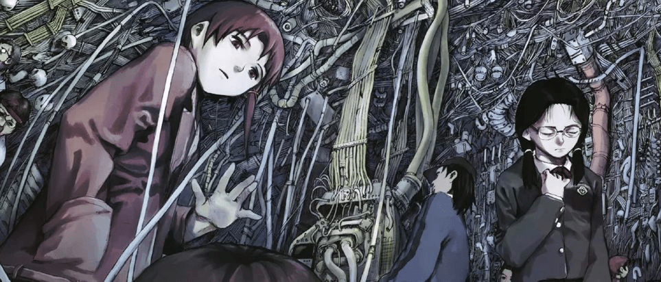

Part 1: Introduction & First Impressions
I wasn't prepared for it. Not at all.
I thought I was watching an anime—but what I experienced felt more like a dream, or maybe a virus crawling through my subconscious.
I watched Serial Experiments Lain for the first time last night. It was late, and the room was quiet—too quiet, in hindsight. The moment it started, I felt... off. Not scared, but unsettled. Like something had already entered me and was asking, quietly: "Are you really here?"
This is not a review from someone who grew up on this anime or studied its references in a film class. This is from someone who stumbled in barefoot, wide-eyed, and maybe a little too vulnerable. And got overwhelmed.
I'd read a bit about it beforehand. People said Lain was "dense," "experimental," "philosophical." But none of that prepared me for the emotional static that hummed under each frame, or the way the show seemed to whisper: "You're not alone. But maybe you were never real."
And I get it now—why people either swear by this anime or stop watching after three episodes. It's not just storytelling. It's an ambient disturbance.
Let me walk you through what stuck with me—and maybe stuck in me.
Part 2: Cyberia and the Collapse of Boundaries
"Cyberia" isn't just a place.
It's a fever dream dressed as a nightclub. A liminal zone.
The first time I saw it on screen, I felt like I'd walked into someone else's mind.
In Serial Experiments Lain, Cyberia is a nightclub in Shibuya—but it might as well be a server room, a purgatory, or the inside of a corrupted hard drive. The name itself is a wink to early cyberculture: a reference to the book Cyberia: Life in the Trenches of Hyperspace, where cyberspace and psychedelics blur into something more than just "online." It's the first internet café in the world—both in fiction and, arguably, metaphor.
What fascinated me is how Cyberia blurs the boundary between the physical and the digital. The characters go there physically, but their minds are already half in the Wired. There are drugs, but the hallucinations feel digital. Lain's presence there is ghost-like, but somehow everyone sees her—maybe.
As a first-time viewer, I found it disorienting, like watching my own brain glitch. Cyberia feels familiar even if you've never been in a club. It echoes a real fear: what if the place you go to disconnect actually does the opposite—what if it amplifies your fragments?
It's not just the setting, either. It's the way people behave inside it. Detached. Floating. Like they're not entirely there.
"Real" and "virtual" don't matter anymore in Cyberia.
Identity is already fluid. Presence is already optional.
The show doesn't tell you this. It just shows you people staring at flickering screens, nodding to invisible beats, speaking in monotones. The club glows with neon, but there's no warmth. You're supposed to feel cold.
And then it hits you: this is where the boundaries collapse.
- Between you and your avatar.
- Between Lain and her other selves.
- Between what's in your head, and what's uploaded into everyone else's.
Cyberia isn't a set piece. It's a symbol.
A warning.
A mirror.

Part 3: Who Is Lain? And Who Are We in the Wired?
"Lain, you're always there."
"Lain, that wasn't you… or was it?"
As I kept watching, a strange unease settled in: there wasn't just one Lain.
There was the shy, quiet Lain at school.
The digital, fearless Lain in the Wired.
The indifferent, cold Lain who denies everything.
The version of her in others' memories.
And then… maybe none of them were real at all.
This is where Serial Experiments Lain goes from being a story about a girl and a computer, to something else entirely. Lain becomes a floating variable—her identity not fixed, but refracted. She doesn't evolve linearly. She forks. Duplicates. Deletes. And sometimes resets.
At first, I thought this was sci-fi. But then I realized: this is already us.
How many versions of "me" exist online right now?
- There's the one in my Instagram posts.
- The one in that late-night chat.
- The one in someone's memory who I haven't seen in years.
- The one Google can describe in 0.48 seconds.
Lain's "fractured self" is not a future. It's a mirror. It made me ask:
If people remember me in ways I can't control—am I still "me"?
If my online self lives on after I stop posting—who's in charge of that ghost?
The Wired in Lain isn't just a technology. It's a mythological space where time, identity, and memory collapse in on each other. It's both terrifying and weirdly beautiful.
One scene that hit me hard was when a classmate says something like,
"Lain's always watching. She knows everything."
You feel it deep down: Lain has become the internet. Not just a user, but the medium itself.
She's no longer "a girl."
She's an omnipresent consciousness held together by everyone else's perception of her.
She's not being watched. She is the watching.
That's the part that gave me chills.
And maybe what scared me most wasn't Lain losing herself.
It was the fact that she kind of liked it.
Part 4: The Aesthetic of Discomfort: Static, Silence, and Style
Silence isn't peace in Lain.
It's pressure. Tension. A scream with the volume turned off.
One of the first things I noticed—and felt—was how quiet the show is. Not in a peaceful, Studio Ghibli way. But in a "why am I holding my breath?" kind of way.
There are long, still shots where nothing moves. Conversations that feel half-glitched. Camera angles that leave faces half out of frame. Hallways that are just… too empty. And then there's that ever-present electrical hum, like the sound a screen makes when you leave it on at night.
That ambient anxiety? That's Lain's soundtrack.
I can't stop thinking about the shadow lines in the characters' faces. The way Lain's hair sometimes looks like it's twitching, alive. The flicker of streetlights. The almost grotesque stillness of her bedroom.
It's not "animation" in the traditional sense. It's atmosphere. It's psychological weather.
The storytelling, too, refuses to comfort you. There's no exposition dump, no dramatic orchestral swells to help you "feel" something. It just… lets things be. Out of order. Out of sync. Out of reach.
And that's what makes Lain feel so timeless.
It's not trying to impress you. It's trying to haunt you.
As someone new to this kind of visual language, I didn't always "get it"—but I felt it. The discomfort was intentional. This isn't a show you binge on the couch. It's something you sit with. Sometimes reluctantly.
The colors are muted. The pace is dreamlike. But it's not slow—it's slow on purpose. It forces you to observe, to squirm, to confront.
I think that's why it works.
Lain doesn't seduce you into its world.
It lures you in, unsettles you, and then asks:
"Are you sure this isn't your world already?"

Part 5: Connected. But Alone.
"No matter where you are… everyone is connected."
That line hit me differently. It didn't feel reassuring. It felt like a warning.
As I watched Lain, I kept asking: what does it mean to be "connected"?
The Wired is presented as a kind of ultimate network—one that links not just machines, but minds. Memories. Emotions.
And yet, the more connected everyone becomes, the more isolated they seem.
Lain herself is the paradox. She's everywhere and nowhere. Everyone knows her name, and yet no one truly knows her. Even she doesn't know which version of herself is "real." Is it the quiet schoolgirl? The omnipotent digital ghost? The one that says "I'm just Lain"?
There's one scene where a friend says, "Lain wouldn't do that," and someone else responds, "How do you know?" That moment stuck. It reminded me how online identity works in real life. You can be anything. You can be misread. Misremembered. Misused.
The more we live online, the more fragmented we become. And Lain captures that perfectly. You get the sense that everyone in the show is desperate to belong, to find meaning, but the more they plug in, the more they unravel. Connection, in this world, comes with a cost.
I thought about my own online presence.
- The curated self.
- The version of me in chat groups.
- The silence in between posts.
Even with constant notifications and algorithmic intimacy, it's easy to feel alone.
Lain isn't trying to fix that. She becomes a kind of god within the Wired—but even she seems sad, confused, perhaps even scared. Power doesn't free her. It isolates her further.
Connection doesn't always mean closeness.
It can mean surveillance. Performance. Exposure.
This show doesn't give answers. It gives feelings.
And the most persistent feeling is this:
In a world where we are constantly "seen,"
being known is still the rarest thing.
Part 6: Reflections from the Wired
When the final episode ended, I just sat there—blinking, quiet, unsure what I was supposed to feel.
I wasn't sad. I wasn't thrilled. I wasn't even confused in the traditional sense.
I was… rewired.
Serial Experiments Lain didn't give me a tidy story. It gave me a state of mind. A mood.
A gentle dismantling of everything I thought I understood about reality, identity, and connection.
I started watching as a casual anime fan. I finished feeling like I'd just had a late-night philosophical debate with the internet itself.
Was I scared? Honestly, yes.
There were moments I felt anxious in a way I couldn't name.
The static. The silence. The weight of eyes I couldn't see.
But there was beauty too.
In the stillness. In the ambiguity. In the courage to leave questions unanswered.
And as a woman watching this—seeing how Lain shifts and fragments and multiplies—I couldn't help but relate. We're often asked to be different things to different people. We're edited, curated, flattened. Lain isn't just a character. She's a reflection of what it feels like to be both watched and unseen.
So, would I recommend Serial Experiments Lain?
Yes. But not to everyone.
Only if you're okay with not understanding everything.
Only if you're ready to sit with discomfort.
Only if you've ever asked yourself:
"Am I really me… or just a version someone else constructed?"
It's not just a show. It's a psychological download.
A glitch you willingly install.
A mirror that sometimes stares back.
And after watching it, I can't quite go back to seeing the internet—or myself—the same way again.
Lain said it best:
"No matter where you are... everyone is connected."
But now I realize—
That doesn't mean we know who we are.
It just means we're not alone in the search.